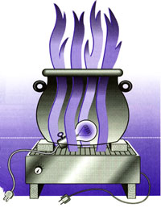

Issue # 134 - October/November 1992
HANDICRAFTS
Make Your Own Halloween Displays.
Halloween decorations have begun to rival those of Christmas in popularity. Adult suburbanites who grew up trick-or-treating simply refuse to give up decorating. Communities often hold at least one "Haunted House" or "Haunted Woods" festival, and store employees often deck themselves out in their most ghoulish garb come October 31st. All of this creates quite a commercial market for innovative storebought halloween displays. But you probably own most of the materials already-so why not make your own? The projects below are fun to make, professional looking, and quick to assemble. The only trouble is that you may attract so many trick-or-treaters, you risk running out of treats.
The fiery candle placed inside the jack-o' lantern has a suitably haunting effect. So a larger fire, seemingly coming out of a witch's cauldron, is even more scary. And now you can create one-without burning down your house. In fact, you don't even have to strike a match.
Materials needed:
a portable electric fan
a red light-bulb with socket and cord
a black plastic trick-or-treater's witch's
cauldron
about one square yard of red transparent gift-wrap material (available at hobby shops or department stores)
Procedure: First, cut the red plastic gift-wrap material into three fire-shaped "flames" about 18 inches long, two to three inches wide. The tops should have the forked, tapered look of a flickering flame. Then fasten the bottom of the flame to the grill of a portable electric fan so that when the fan is turned on, the plastic strips will be blown upward, dancing vigorously in the breeze. Next, cut the bottom off of the witches' cauldron until it is about 12 inches high. Place the cauldron atop the blowing fan so that the "flame" tops will be visible coming out of it. (Note: prop the cauldron on top of the fan with pieces of wood so that the fan's blades will have a two- to four-inch space to draw air through; otherwise the flames will not move as vigorously. You may also have to tie the cauldron to the fan in order to prevent it from being blown over.)
You have now finished the main construction job. All you need to do now is place the red light bulb atop the fan's grill with the wire running under the cauldron, then plug in the whole thing for an outstanding fire effect. A red glow will emanate from the cauldron as flames leap hauntingly from its interior like something from the Night on Bald Mountain sequence in Fantasia. Place this fiery spectre on a chair beneath a window so that only the cauldron and flames are visible to trick-or-treaters. Then turn the house light out. This project is so good, someone may call the fire department.
The same principle of the cauldron effect can be used to transform a rubber toy bat into an animated vampire.
Materials needed:
a rubber bat
one square foot of lightweight, hefty-type black plastic bag material
a portable electric fan
strong, gray thread (as close to invisible as you can find)
Procedure:
Cut the bat's wings off, leaving about one inch of wing at the base next to the body. Then cut a pair of new wings (a good deal larger than the original wings) from the black, plastic hefty-bag. Fasten these new wings to the remaining one-inch base of the bat's original wings. You can use staples, sewing thread, or strong glue. For stability, fasten the two separate pieces of thread (about 12 inches long) to each of the bat's feet, separately. Then tie each of the other thread ends to separate points on the fan's grill. Be sure to attach the threads at distant points on the fan; otherwise the bat will twirl, and the wings (having a poor foundation) will flutter less.
Next, tie another section of thread around the bat's neck, and move the fan just beneath a suitable window sill so that it will be invisible to trick-or-treaters. Tie the end of the thread which is attached to the bat's neck to a curtain rod above the window. The bat should be suspended in mid-air above the window sill. When the fan is turned on, the bat will remain still but the wings will flutter, giving the impression of a hovering vampire bat at the window.
You may have to experiment with both the wings' size and shape, and the distance of the bat from the fan in order to achieve the best wing-fluttering effect. All of this varies with bat size as well as fan shape, size, and power. You can also heighten the haunting effect by lighting the room with an orange Christmas light, which will exude a dim, eerie glow while also reducing the visibility of the thread on which the bat is suspended.
Ghosts are practically a staple of Halloween as far as illustrations and costumes are concerned. Yet, rarely does one see a ghost actually floating in the air. Here's a remedy for that.
Materials needed:
about one square yard of chicken wire
one square yard of white
muslin cloth
a portable electric fan
thread
Procedure:
Mold the wire into the shape of a ghost, with head and torso, and outstretched arms. (It will have to be rather small to fit above a window.) Cover the ghost frame with draped muslin (including long, fringed trailings) and sew onto the frame. Then tie the ghost with two separate pieces of thread to a curtain rod above the window, plus another thread from the ghost's tail to the fan beneath the window sill. The bottom thread to the fan should have some slack, however, so that the ghost will move a little in the fan's breeze. Next, turn on the fan beneath the window sill to bring the ghost to life. Again, you may have to experiment with distances and thread length to achieve the best effect.
A variation on this theme is to substitute plastic skeletons for the ghost. Such loose-jointed, hollow skeletons (about 18 inches high) are sold almost everywhere around Halloween. By tying the head to a curtain rod, and the feet to a fan (as with the ghost), their arms will flutter in the fan's breeze.
This is an extension of the traditional jack-o'-lantern, but with an electronic twist. Unlike the other displays mentioned here, this one is stationary.
Materials needed:
plastic model skull
night-light
extension chord
Procedure:
Place the night-light inside the neck of the assembled skull, plug it in, and presto! The eyes of the skull will glow with a piercing light. Most night-lights do not give off heat, so there is no worry of fire hazard. Place the skull on a window sill (perhaps next to the fiery caldron) and plug it in. If you are worried about jack-o'-lantern fires, try substituting the skull for the usual candle in the pumpkin. Unfortunately, skull models are not easy to find but if you can locate one, it is worth the trouble of assembling. To add an extra touch of realism, give the assembled skull a good coat of white spray paint.
A coven surrounding a boiling cauldron is a classic bone-chiller. It appeares in Shakespeare's Macbeth, as well as Sleeping Beauty, Snow White, and the Wizard of Oz. Witches can't seem to witch without their pot of potions.
Materials needed:
Ceramic jar
pine-incense cone
skull and crossbones label
Procedure: Even a sorcerer's apprentice could make this one. First, affix a rustic-looking label to the ceramic jar, identifying the contents with a skull and crossbones.Then light the incense cone, blow on it a little to get it going, drop it into the jar, and place it on a window sill. Smoke will come Curling out. (The jar will have to be fairly large for oxygen circulation, and it should be ceramic rather than glass, so that no one can see what is actually smoldering within.
Materials needed
rubber snake
record player turntable
wire
Procedure:
Back again to the living-room window: position the turntable just under the window. Make sure the side nearest the window is higher than the side away fro in the window. Then place the curled-up rubber snake around the turntable (facing to the right). When turned on, the turntable turns clockwise, making the snake appear suddenly at the window then turn and disappear. The snake's head should be propped up with wire so that it's visible. Coating the rubber snake with baby oil heightens the icky effect.
If the snake didn't light your fire, try making your own disembodied hand. "Hands without bodies" were a creepy phenomenon in British folklore 1 00 years ago, and you can make your own creepy hand using the same turntable with a plastic or rubber hand. Position the turntable at an approximately 45° angle just beneath the window, and stick the hand on it using a suction cup. The result will be the impression of a hand Coming up to the window, turning, and then vanishing below. YOU can heighten the effect by putting something in the hand, such as a plastic spider, a fake eyeball, or a sign-"Bring out your dead," "Abandon all hope ye who enter here," or "'Them that dies'll be the lucky ones!"
|
 |
|
|
|
|
|
|